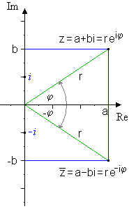

Ziel dieses Abschnittes ist das Lösen algebraischer
Gleichungen (z.B. x^2+1=0) in denen Wurzeln
negativer Zahlen vorkommen. Dieses wird häufig benötigt um
Nullstellen reeller Polynome \sum_{k=0}^{n}a_k x^k,
a_k\text{, } x\in\mathbb{R},
k\in\mathbb{N} zu finden.
z^*_{1,2}=p \mp i\,q sind die konjugiert
komplexen zu z_{1,2}=p \pm i\,q.
Oft wird auch \bar{z} anstatt z^*
für die komplex Konjugierte benutzt.
Gaußsche Zahlenebene:
Die Gaußsche Zahlenebene dient der Veranschaulichung
von komplexen Zahlen und komplexen Abbildungen. Wie
in Abbildung 1 zu sehen, kann eine komplexe Zahl
z = p+i\,q mit z \in \mathbb{C},
p,q \in \mathbb{R} durch zwei Abbildungen
in einem zweidimensionalen Koordinatensystem
dargestellt werden
\begin{eqnarray*}
\Phi\;:\;\mathbb{C}&\rightarrow&\mathbb{R}^2\\
z&\mapsto& (p,q) &\mbox{ mit }& z=p+i\,q\\ \\
\Psi\;:\;\mathbb{C}&\rightarrow&\mathbb{R}^2\\
z&\mapsto& (r,\phi) &\mbox{ mit }&
z=r\, \left(
\cos\phi+i\,\sin\phi
\right) \\
\,&&\,&\mbox{ und }& r = |z|.
\end{eqnarray*}
Abbildung 1: Die Gaußsche Zahlenebene ist ein
kartesisches Koordinatensystem, in dem der Realteil
\Re(z) = a \in \mathbb{R} einer komplexen
Zahl z \in \mathbb{C} auf der x-
Achse und der Imaginärteil \Im(z) = b \in
\mathbb{R} auf der y-Achse aufgetragen
wird.
In Abbildung 1 wird eine andere Abbildungsvorschrift für
\Psi als in unserer Definitionsliste verwendet.
Dies ist kein Fehler es gilt nämlich die
Um diese zu
verstehen müssen wir die komplexe e-
Funktion verstehen. Gelegenheiten hierfür wird es im Laufe
des Kurses noch geben. Für den Moment muss die Euler-Formel
so akzeptiert werden (alle, die nicht warten können verweisen
wir auf den
Wikipedia-Artikel zur Exponentialfunktion).
Ein Polynom mit komplexen Nullstellen…
…ist zum Beispiel p(x)=x^3+x. Wir können es
umschreiben zu p(x)=x^3+x=x(x^2+1) und erkennen,
dass nur eine reelle Nullstelle existiert und zwar bei
x_1=0. Im Komplexen hingegen besitzt dieses
Polynom drei Nullstellen und zwar x_1=0,\,x_2=i,\,x_3=
-i.
Beachte, dass hier x_1,x_2,x_3 \in \mathbb{C}
komplexe Zahlen darstellen.
Darstellung der komplexen Konjugation in der Gaußebene

Abbildung 2: Darstellung von z und
\bar{z} beziehungsweise z^*.
Geometrisch entspricht die komplexe Konjugation einer
Spiegelung an der x-Achse.
In Abbildung 2 ist eine graphische Darstellung der komplexen
Konjugation in der Gaußebene zu sehen. Die kompelxe Konjugation
entspricht einer Spiegelung an der reellen Achse.
Es ist sofort einleuchtend, dass damit auch (z^*)^*=z
ist.
Rechenregeln zu Darstellungsformen der komplexen Zahlen
Satz: Darstellungsformen und Transformationsformel
Sei z \in \mathbb{C}, z = p + i\,q. Dann ist
r=|z|=\sqrt{p^2+q^2}
der Betrag und
\phi = \arctan\left(\frac{q}{p}\right)
das Argument von z.
Mit diesen Transformationsformeln ergeben sich folgende
drei Darstellungsformen für eine komplexe Zahl z:
Algebraische Form:
z = p + i\,q
Trigonometrische Form:
z = r\, \left( \cos\phi + i\, \sin\phi \right)
Exponentialform:
z = r\,e^{i\phi}
Bemerkung: Da die Arcustangensfunktion
nur auf dem offenen Intervall \left(-\frac{\pi}{2}
,\frac{\pi}{2}\right) definiert ist, müssen wir von
der so genannten
Satz: Quadrantenregel
Das Argument \phi einer komplexen
Zahl z ist abhängig vom Quadranten (siehe Abb. 3),
in dem z verortet ist. Es gilt:
1. und 4. Quadrant:
\phi = \arctan\left(\frac{q}{p}\right)
2. Quadrant:
\phi = \arctan\left(\frac{q}{p}\right)+\pi
3. Quadrant:
\phi = \arctan\left(\frac{q}{p}\right)-\pi
Abbildung 3: In einem 2 dimesionalen Kartesischen
Koordinatensystem werden die quadranten in mathematisch
positiver Richtung von eins bis vier durchnummeriert.
Lehrvideo: Komplexe Zahlen - Die Darstellungen
In diesem Video erklärt euch Fabian die Darstellungsformen
der komplexen Zahlen noch einmal in aller ausführlichkeit.